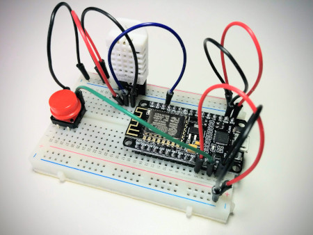
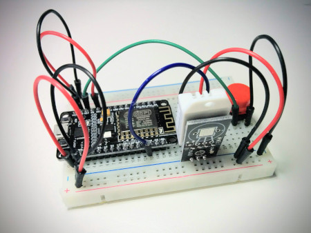
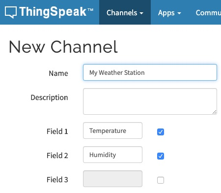
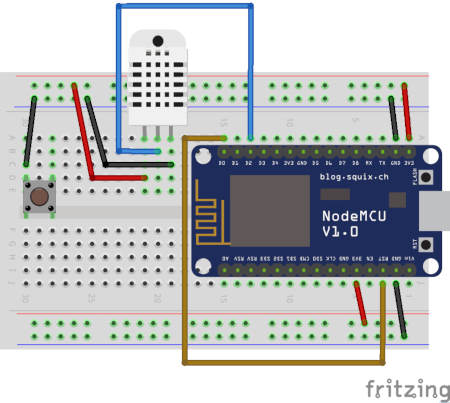
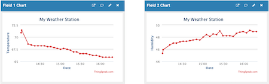
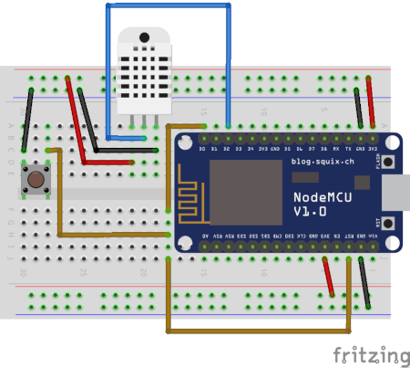

MicroPython and the Internet of Things, Part V: Temperature and Humidity
Posted by
on underIn this chapter I'm going to show you how to work with a temperature and humidity sensor.
If you want to see me and hear me explain everything in this tutorial, I encourage you to purchase the video version from my Courses site. Not only it will make for a better learning experience, but you'll also be supporting my effort in keeping my blog updated with relevant content. Thank you!
For your reference, here is the complete list of chapters in this tutorial:
- Chapter 1: Welcome
- Chapter 2: Hello, MicroPython!
- Chapter 3: Building a MicroPython Application
- Chapter 4: Wi-Fi and the Cloud
- Chapter 5: Temperature and Humidity (this article)
- Chapter 6: Working with a Screen
The DHT22 Temperature and Humidity Sensor
The DHT22 sensor is a low cost device that can obtain temperature and humidity readings. It uses a custom data transmission protocol that is very friendly to microcontrollers such as the Arduino and of course, the ESP8266. There are versions of this sensor with three and four pins, but in the four pin variant only three pins are used. The pins are connected to voltage, ground, and an available GPIO pin. One limitation these devices have is that to get more accurate results, you have to wait at least two seconds between readings.
In the three-pin versions of this device the pins are VCC, OUT and GND from left to right and looking at it from the front. The OUT pin is the data output pin. You should verify this is the order for your own device before you connect it. You may see the voltage pin labeled as VCC or maybe +. The GND pin is sometimes labeled -. If you have a four-pin version, then the order is the same, but you have to skip the third pin which does not have any use.
Here is a diagram with the wiring of this sensor to the ESP8266 board:

To connect this sensor I'm taking advantage of the power strips in the breadboard. The only connection that goes directly into the microcontroller is the one for the data pin or OUT, which I connected to pin D2, also known as GPIO4. I've chosen the D2 pin randomly from the available ones. I have used D0 and D4 as output pins to control the on-board LEDs, which I may want to still have access to. If I were to connect the sensor on one of these pins, I would not be able to use the corresponding LED because the pin is going to be configured as an input pin to receive the data from the sensor, but I could have also picked D1, D3, or any other available D pin. You can see in the diagram that I left the external reset button from the previous chapter connected, since it should not interfere with the sensor in any way.
Remember that if you have one of the DHT22 models with four pins the third pin is generally the one that is unused.
It's getting harder to show clear pictures of all the connections on the breadboard, but if you've done everything correctly yours should look more or less like mine shown below:


Obtaining Sensor Readings
Do you want to know what's the temperature right there where you are? Now that the temperature sensor is hooked up to your microcontroller you are ready to find out!
Start a MicroPython REPL on your board, and enter the following statements to read the temperature and humidity using the sensor:
>>> import dht
>>> import machine
>>> d = dht.DHT22(machine.Pin(4))
>>> d.measure()
>>> d.temperature()
18.4
>>> d.humidity()
47.3
MicroPython comes with a few drivers for commonly used devices. The DHT22 sensor is luckily supported, so all I needed to do is import the corresponding class and use it. The dht package contains two temperature sensor drivers, one for the DHT11 and another for the DHT22. The only argument that needs to be provided to the DHT22() class is a machine.Pin() instance for the GPIO pin connected to the data pin of the sensor. In my case I have it connected to D2, which is GPIO4.
Once you have the object created, a call to measure() activates the sensor and performs a reading of both temperature and humidity. This method sends a "start" signal to the sensor through the data pin, and this wakes the sensor from its standard dormant state. The sensor then takes measurements of temperature and humidity and returns them, also through the data pin. As soon as this process completes the sensor goes back to sleep. If you are curious about the communication protocol used in the exchanges between the microcontroller and the sensor, you can read about it here.
After a measurement has been taken, you can use the temperature() and humidity() methods to retrieve the results. The temperature is returned in the Celsius scale, and the humidity is returned as a percentage, what is usually known as relative humidity.
If you live in the United States or one of the few other countries in the world where the Fahrenheit scale is used for temperatures, then the Celsius results are not going to mean much to you. In that case you can take the Celsius measurement and convert it to Fahrenheit with the following formula:
>>> d.temperature() * 9 / 5 + 32
65.12
The above calculation takes the celsius temperature and multiplies it by 1.8 (or by the fraction 9/5, which is the same thing) and then adds 32. The result is the same temperature, but expressed in the Fahrenheit scale.
I should note once again that the DHT22 sensor has what I consider a minor limitation. You can't call the measure() method more than once every two seconds, as the sensor needs that time to reset itself and get ready to take another measurement. If you force the sensor to measure at a higher rate than that, then the results are not going to be accurate. When the sensor is used correctly the accuracy is reported as +/-0.5 degrees celsius, which is very good for such a cheap sensor.
The temperature() and humidity() methods do not have a calling rate limitation because they just return the data that was obtained by the last call to measure().
Weather Station Application
Now that you know how to work with the sensor, I can show you how this can be incorporated into an application. The final goal is to have an application that reads the temperature and humidity at regular intervals and uploads all those values to the cloud.
As I've done in previous chapters, I'm going to create a sub-directory inside the micropython-tutorial directory where I'm going to save the application files for this example:
(venv) $ mkdir chapter5
(venv) $ cd chapter5
I'm going to split this task in three parts. In this section I'll show you how to read the temperature and humidity in the context of an application. Then in the following sections I'll add the cloud upload part, and finally the scheduling portion, where I'm going to configure the microcontroller to go to sleep and wake up on its own.
To begin, let's encapsulate the whole sensor operation logic in a function in main.py. This function will obtain the data pin for the sensor from the configuration. To make this function more flexible, I can also add a setting to control which units are desired for temperature:
import dht
import machine
import config
def get_temperature_and_humidity():
dht22 = dht.DHT22(machine.Pin(config.DHT22_PIN))
dht22.measure()
temperature = dht22.temperature()
if config.FAHRENHEIT:
temperature = temperature * 9 / 5 + 32
return temperature, dht22.humidity()
You should be familiar with most of what I've done above, except maybe the last line, which returns the data. This function needs to return temperature and humidity, so I've chosen to return them as a tuple. The caller of this function has two options to deal with the return values. If it assigns the return of this function to a single variable, then the temperature and humidity values need to be extracted from the tuple:
>>> result = get_temperature_and_humidity()
>>> result[0]
18.4
>>> result[1]
47.3
This may seem a little odd, because when you see result[0] in the code it isn't immediately clear that this refers to the temperature. A clearer alternative that I prefer when working with tuple return values is to break the tuple directly in the assignment:
>>> temperature, humidity = get_temperature_and_humidity()
>>> temperature
18.4
>>> humidity
47.3
As you seen above, you need to create a config.py file with the following variables:
DHT22_PIN = 4 # D2
FAHRENHEIT = False
Of course you are free to set the value of the FAHRENHEIT variable according to your preferences. If you want to test this so far, upload main.py and config.py to your microcontroller and then run the following from the REPL:
>>> import main
>>> temperature, humidity = main.get_temperature_and_humidity()
>>> temperature
19.3
>>> humidity
51.8
Logging to the Cloud
The next task I'm going to ask you do is set up an account at thingspeak.com. This is a cloud service that stores data series, specifically designed for Internet of Things devices. The free tier offered by this service is more than enough for the needs of this tutorial.
As part of the account creation you will be asked to create a second account at mathworks.com, and for this you can use the same email address. Once you complete the account set up and verify your email address, click the "Channels" dropdown in the top navigation bar, and then select "My Channels".
At this point you don't have any channels, so this page is going to be mostly empty, with just a "New Channel" button. Click this button to create a channel where you'll upload your sensor data. In ThingSpeak, a channel is a data structure that can hold timed series. Each channel can have up to eight fields, but for this exercise you need just two to hold the temperature and humidity series. See below how I configured my channel:

The remaining options in the New Channel screen can be left alone. Once you added the two fields, click the "Save Channel" button at the bottom.
Now you should be in the new channel's page. The channel has its own navigation bar, and you are seeing the "Private View" page, where there are still empty charts for the two fields that you created in this channel. Click on "API Keys" on this navigation bar to access the page that has the information on how to upload data to the channel.
The API Keys page shows the two keys that were assigned to your channel, one for writing data to it and another for reading. On the right sidebar there is a section titled "API Requests", which shows a few example HTTP requests that you can send for different tasks. The one that is interesting at this point is the "Upload a Channel Feed", which shows the GET request that needs to be sent to write some data into the channel. It should be similar to this, but with a different API key:
GET https://api.thingspeak.com/update?api_key=IQBL4LHQIQ84YH57&field1=0
Even though this is a webhook URL in many ways similar to that of the IFTTT service you used in the previous chapter, there are two differences. First, ThingSpeak uses a GET request for data submission, which is not very conventional because requests of this type cannot carry a payload. In general a POST request is used when submitting data to a web service, as you saw with IFTTT, where a JSON payload was attached to the request. Some services bend the rules a little bit and use a GET request for data submission, because in general it is easier to send a GET request than a POST request.
But if GET requests cannot carry data with them, how is the data submitted? Look at the above URL, in particular to the part that follows after the ? sign. Let me repeat that part here with spaces added for clarity:
? api_key=IQBL4LHQIQ84YH57 & field1=0
The HTTP protocol calls this the query string part of the URL. It starts with a question mark, and is followed by one or more parameter assignments. If multiple parameters are included, they are separated with an ampersand sign. The thingspeak URL uses a parameter called api_key for the write API key, which is what identifies your channel. Then a second parameter called field1 passes a value for the first field in the channel. So as you see, uploading data to ThingSpeak implies generating this URL that includes parameters and then sending a GET request with it. Since your channel has two fields, the URL is going to have one more parameter in it:
GET https://api.thingspeak.com/update?api_key=IQBL4LHQIQ84YH57&field1={t}&field2={h}
In this URL, I used {t} and {h} to represent the values of temperature and humidity read from the sensor. These will have to be incorporated into the URL before the request is made.
In the previous chapter I used a WEBHOOK_URL configuration variable to define the webhook URL. For this application I'm going to do the same, but this time I'm going to need to insert the two variable parameters in it. To do this, select the upload URL shown in the API Keys page of your channel and paste it on your config.py file. Then edit it so that it matches the following format:
DHT22_PIN = 4 # D2
FAHRENHEIT = False
WEBHOOK_URL = 'https://api.thingspeak.com/update?api_key=IQBL4LHQIQ84YH57&field1={temperature}&field2={humidity}'
When you do this, make sure that the value of the api_key parameter is your channel's write key, not mine. Also make sure you write the values for the temperature and humidity exactly as {temperature} and {humidity}, as these will be replaced with the actual values before the request is sent to ThingSpeak.
The function that calls the webhook is surprisingly similar to the one from the previous chapter:
import urequests
import config
def log_data(temperature, humidity):
print('Invoking log webhook')
url = config.WEBHOOK_URL.format(temperature=temperature,
humidity=humidity)
response = urequests.get(url)
if response.status_code < 400:
print('Webhook invoked')
else:
print('Webhook failed')
raise RuntimeError('Webhook failed')
The url is generated with the format() method of the Python strings. It basically replaces any occurrences of {variable} with the value of a keyword argument of the same name. It's a very convenient function to quickly render templates for URLs. You may also be familiar with the newer f-strings introduced in the Python language in version 3.6.
Unfortunately MicroPython does not have f-strings, so the format() method is the best option at this time.
After the URL is generated, the function is identical to that of the previous chapter. The RuntimeError() is raised if the webhook returns any 400 or above status code, which are all indicative of a problem. If you recall, in the previous chapter any raised exception were handled in the run() function by blinking the LEDs three times.
So far your main.py file has the get_temperature_and_humidity() and log_data() functions. Since this application is in many ways similar to the one from the previous chapter, some of the code can be copied over. This includes the connect_wifi(), show_error(), is_debug() and run() functions. The only function that needs to be adapted is run(), the others work for this new application exactly as they are.
Here you have a complete first version of main.py for the temperature and humidity cloud uploader application:
import dht
import machine
import network
import sys
import time
import urequests
import config
def connect_wifi():
ap_if = network.WLAN(network.AP_IF)
ap_if.active(False)
sta_if = network.WLAN(network.STA_IF)
if not sta_if.isconnected():
print('Connecting to WiFi...')
sta_if.active(True)
sta_if.connect(config.WIFI_SSID, config.WIFI_PASSWORD)
while not sta_if.isconnected():
time.sleep(1)
print('Network config:', sta_if.ifconfig())
def show_error():
led = machine.Pin(config.LED_PIN, machine.Pin.OUT)
led2 = machine.Pin(config.LED2_PIN, machine.Pin.OUT)
for i in range(3):
led.on()
led2.off()
time.sleep(0.5)
led.off()
led2.on()
time.sleep(0.5)
led.on()
led2.on()
def is_debug():
debug = machine.Pin(config.DEBUG_PIN, machine.Pin.IN, machine.Pin.PULL_UP)
if debug.value() == 0:
print('Debug mode detected.')
return True
return False
def get_temperature_and_humidity():
dht22 = dht.DHT22(machine.Pin(config.DHT22_PIN))
dht22.measure()
temperature = dht22.temperature()
if config.FAHRENHEIT:
temperature = temperature * 9 / 5 + 32
return temperature, dht22.humidity()
def log_data(temperature, humidity):
print('Invoking log webhook')
url = config.WEBHOOK_URL.format(temperature=temperature,
humidity=humidity)
response = urequests.get(url)
if response.status_code < 400:
print('Webhook invoked')
else:
print('Webhook failed')
raise RuntimeError('Webhook failed')
def run():
try:
connect_wifi()
temperature, humidity = get_temperature_and_humidity()
log_data(temperature, humidity)
except Exception as exc:
sys.print_exception(exc)
show_error()
if not is_debug():
machine.deepsleep()
run()
This should be mostly familiar to you because most of the code came from the previous chapter. There is one minor change in the run() function however that I want to point your attention to. The webhook of the previous chapter was only invoked when the device was reset. To distinguish a restart due to a reset from other conditions I used the machine.reset_cause() function. For this application I thought it made more sense to capture and log data for all the different restart conditions, so I removed the check for the restart cause.
The config.py file that goes with this version of the application is shown below:
WIFI_SSID = 'your SSID'
WIFI_PASSWORD = 'your Wi-Fi password'
LED_PIN = 2 # D4
LED2_PIN = 16 # D0
DEBUG_PIN = 14 # D5
DHT22_PIN = 4 # D2
FAHRENHEIT = False
WEBHOOK_URL = 'https://api.thingspeak.com/update?api_key=IQBL4LHQIQ84YH57&field1={temperature}&field2={humidity}'
Of course you will need to customize this configuration to your situation, including entering your Wi-Fi details and the correct webhook for your ThingSpeak channel.
If you upload main.py and config.py to your microcontroller, each time you power it or reset it a record of the current temperature and humidity will be uploaded to your channel on thingspeak.com.
Deep Sleep with a Wake Up Alarm
There is one last important piece in this application to complete it. The application currently logs temperature and humidity only when the board is powered on or reset. This was a good option for the application that emulated Amazon Dash buttons in the previous chapter, but for a data logger the most convenient implementation is for data to be logged automatically at regular intervals without any intervention. So basically, the requirement is to schedule the board to reset after a specified interval.
The ESP8266 microcontroller has a real-time clock or RTC. Besides keeping time, this component provides an alarm that can be programmed to go off after a specified number of milliseconds have passed. Interestingly, the only component that is not powered off when the microcontroller enters deep sleep mode is the RTC, so it is possible to program the alarm to fire after some amount of time has passed and then put the device to sleep to let the alarm bring it back from sleep. The following statements configure the ESP8266 alarm, which is referenced as ALARM0 in MicroPython, to wake up the device when it fires:
>>> rtc = machine.RTC()
>>> rtc.irq(trigger=rtc.ALARM0, wake=machine.DEEPSLEEP)
The next step is to configure when the alarm should go off. For example, to program the alarm to fire after one minute, you have to do this:
>>> rtc.alarm(rtc.ALARM0, 60 * 1000)
In this example the 60 * 1000 expression calculates the equivalent of one minute in milliseconds, which are the units the alarm needs. I like to use this expression instead of the calculated value to make the code a little bit more readable.
There is one more detail that is going to seem very strange to you. The method the alarm uses to wake the device is indirect. All the alarm does is keep pin D0 high (i.e. with a value of 1) until the alarm fires, at which point it changes it to low (0 in other words). If you go back to the pinout diagram for the microcontroller you will see that another alias for pin D0 is WAKE.
What does pin D0 have to do with a reset you may ask? Really nothing, changing pin D0 from 1 to 0 does not trigger a reset on its own, and in fact, you already know that all this does is turn one of the on-board LEDs on! The key to force the board to reset is to connect this pin to the RST pin. Recall from last chapter that the RST pin triggers a reset of the board when it is set low. The button that you used to trigger a reset connected RST to GND when it was pressed, which forces a low state. If pin D0 is connected to RST while it is pulled high, nothing will happen, but when the alarm triggers, pin D0 will change to a low value and that will force RST to also go low and thus reset the board. Ingenious, right?
Unfortunately pin RST is connected to the external reset button. I did not want to try to force two jumper wire pins into the one available hole that connects to RST in the breadboard, so to avoid complications I disconnected and removed the button, and then made the connection between D0 and RST instead. I left the button on the breadboard, and I also left the ground connection for this button, because I'm not giving up on having the reset button working, I'll show you how to add it back in the next section. Here is the current connection diagram:

There is another problem that I indirectly mentioned already. I was using pin D0 to blink the second on-board LED in error situations. But now pin D0 is connected to RST, so turning the LED on by setting the pin to 0 is also going to make RST low and consequently reset the board! To avoid this problem I decided to simplify my error reporting. Instead of blinking the two LEDs, from now on I'm going to blink just the one connected to pin D4.
Once the alarm is configured to go off at the desired time, and pin D0 is connected to pin RST, all that is left to do is to put the board to sleep:
>>> machine.deepsleep()
To incorporate this functionality into the application, I'm going to start by adding one more configuration variable to config.py that will hold the data logging interval, which I'm going to set to one minute. For this I decided to use seconds as units:
LOG_INTERVAL = 60
Now I can consolidate the alarm handling code into a new function in main.py:
def deepsleep():
print('Going into deepsleep for {seconds} seconds...'.format(
seconds=config.LOG_INTERVAL))
rtc = machine.RTC()
rtc.irq(trigger=rtc.ALARM0, wake=machine.DEEPSLEEP)
rtc.alarm(rtc.ALARM0, config.LOG_INTERVAL * 1000)
machine.deepsleep()
And then in run() instead of calling machine.deepsleep(), which sleeps until a manual reset occurs, I call the above function to sleep for the configured time. Once the board wakes up, it will reboot and run the application one more time, just like when the board is reset, so another sample will be logged to ThingSpeak, and then the cycle will repeat.
Here is the complete version of the application for your reference:
import dht
import machine
import network
import sys
import time
import urequests
import config
def connect_wifi():
ap_if = network.WLAN(network.AP_IF)
ap_if.active(False)
sta_if = network.WLAN(network.STA_IF)
if not sta_if.isconnected():
print('Connecting to WiFi...')
sta_if.active(True)
sta_if.connect(config.WIFI_SSID, config.WIFI_PASSWORD)
while not sta_if.isconnected():
time.sleep(1)
print('Network config:', sta_if.ifconfig())
def show_error():
led = machine.Pin(config.LED_PIN, machine.Pin.OUT)
for i in range(3):
led.on()
time.sleep(0.5)
led.off()
time.sleep(0.5)
led.on()
def is_debug():
debug = machine.Pin(config.DEBUG_PIN, machine.Pin.IN, machine.Pin.PULL_UP)
if debug.value() == 0:
print('Debug mode detected.')
return True
return False
def get_temperature_and_humidity():
dht22 = dht.DHT22(machine.Pin(config.DHT22_PIN))
dht22.measure()
temperature = dht22.temperature()
if config.FAHRENHEIT:
temperature = temperature * 9 / 5 + 32
return temperature, dht22.humidity()
def log_data(temperature, humidity):
print('Invoking log webhook')
url = config.WEBHOOK_URL.format(temperature=temperature,
humidity=humidity)
response = urequests.get(url)
if response.status_code < 400:
print('Webhook invoked')
else:
print('Webhook failed')
raise RuntimeError('Webhook failed')
def deepsleep():
print('Going into deepsleep for {seconds} seconds...'.format(
seconds=config.LOG_INTERVAL))
rtc = machine.RTC()
rtc.irq(trigger=rtc.ALARM0, wake=machine.DEEPSLEEP)
rtc.alarm(rtc.ALARM0, config.LOG_INTERVAL * 1000)
machine.deepsleep()
def run():
try:
temperature, humidity = get_temperature_and_humidity()
print('Temperature = {temperature}, Humidity = {humidity}'.format(
temperature=temperature, humidity=humidity))
connect_wifi()
temperature, humidity = get_temperature_and_humidity()
log_data(temperature, humidity)
except Exception as exc:
sys.print_exception(exc)
show_error()
if not is_debug():
deepsleep()
run()
And here is the config.py that goes with it:
WIFI_SSID = 'your SSID'
WIFI_PASSWORD = 'your Wi-Fi password'
LED_PIN = 2 # D4
DEBUG_PIN = 14 # D5
DHT22_PIN = 4 # D2
FAHRENHEIT = False
WEBHOOK_URL = 'https://api.thingspeak.com/update?api_key=IQBL4LHQIQ84YH57&field1={temperature}&field2={humidity}'
LOG_INTERVAL = 60
Note how I simplified the show_error() function to use only one LED, and also the removal of LED2_PIN from config.py since it is not going to be used anymore.
Now you can upload main.py and config.py to your board and then leave it to run for a few hours, logging temperature and humidity data every minute. The channel page on the ThingSpeak website will update the charts as new measurements are uploaded, and without the need for you to refresh the page. Here is what I see on my channel after running my microcontroller for a while:

Extending the RST Pin
In the previous section I had to disconnect the external reset button to make space to connect the wake up alarm pin on the RST pin of the microcontroller board. In many cases not having an external reset button for this type of application is going to be perfectly fine. This is now an embedded device that is self-sufficient, it knows how to go to sleep and wake up on its own.
But reconnecting the reset button back is I think a good example to demonstrate how you can do this with a little bit of creativity. The problem is that the size of the microcontroller board with respect to the breadboard leaves a single available hole to make connections to each of the board's pins, and in this case there are two wires that need to connect to RST. If you had a bigger breadboard that had two open holes per ESP8266 pin, then there would be no problem. But how to make it work with this breadboard, and without forcing two pins into a single hole?
Let's revisit the concept of power strips in the breadboard. The two top and bottom rows function as extensions for the 3V3 and GND pins. Simply by wiring a pin to any of the holes in a power strip row, all the other holes become extensions of that pin. The solution is, then, to create an extension for the RST pin as well!
One way to do this would be to use one of the power strips that is currently unused. For example, the bottom row is currently a GND extension, but it isn't used for anything. The wire that connects GND with a hole in this bottom row could be moved to the RST pin and then that row would work as an extension to RST. I think this approach can be confusing, because the power strips by convention are used for power and ground.
A better approach in my opinion is to build a mini-power strip in an unused part of the breadboard. Recall that the holes in the middle sections of the breadboard are grouped in fives, so I can take any unused column of five holes and build my RST extension there. To do this I picked a column of five holes in the lower half of the breadboard, close to the border of the microcontroller. I connected a jumper wire between RST and one of these five holes, and then used two of the remaining four holes to connect to pin D0 and the to right side of the external reset button. Here is the final diagram including this change:

And now the board can log sensor data every minute, but you can override the schedule and trigger an update at any time by pushing the reset button.
Become a Patron!
Hello, and thank you for visiting my blog! If you enjoyed this article, please consider supporting my work on this blog on Patreon!

-
#1 Janio LIma said
Awesome teatching. Thanks so much again.
I did some adjusts to complete the tasks because my ESP8266 is an old version, larger than yours and without the second led. And my temperature and humidity sensor is the DHT11.To use the DTH11 I just change the the code, using dht11 instead of dht22. CODE: dht11 = dht.DHT11(machine.Pin(config.DHT11_PIN)
To simulate the second led I put an external led on the breadboard, connected on GND row and on a D1 Pin, I use the PULL_UP parameter and the oposite values do turn on and turn off this led and everthing work correctly. CODE: led2 = machine.Pin(config.LED2_PIN, machine.Pin.OUT, machine.Pin.PULL_UP)
-
#2 UrbanPro said
Thanks for sharing the valuable information about data science…..It was very helpful to me
-
#3 Isabel M said
Thank you for sharing this useful project for my students, I'm trying to find the 3 pin DHT22 sensor in Fritzing but I cannot find it, is kind of confusing for my students to use the 4 pin sensor. Do you have by chance the 3 pin DHT22 fritzing part that you can share? Thank you!!
-
#4 Miguel Grinberg said
@Isabel: As I recall, I photoshopped those pins, as I also did not find a 3-pin version component. What I did is use another component with 3 pins, then pasted the body portion of the temperature sensor on top.
-
#5 Manoj K Sharma said
Sir i am doing exactly the way you explained here but not getting the same result. I am getting following message :
%Run -c $EDITOR_CONTENT
Traceback (most recent call last):
File "<stdin>", line 6, in <module>
ImportError: no module named 'urequests'
what should i do to solve it. My esp8266 board have single on board LED as compared to double on board LEDs which are on your board.
-
#6 Miguel Grinberg said
@Manoj: what version of MicroPython are you running? Where did you get the firmware from? It seems your firmware does not have the
urequestsmodule, for some reason. -
#7 Manoj K Sharma said
@Miguel Grinberg : Sir you were absolutely correct. My firmware does not had the urequests module. I installed latest firmware and problem solved.
Now i want to log the data and at the same time i want to control the Air Conditioner also so that i can control temperature. For this i have attached a relay with ESP8266 board. Using the temperature condition , i am writing 1 or 0 to GPIO5. It Trigger the relay but at the same time my ESP8266 board restarts due to RTC. I want that my board keep running whole time rather than resetting the board after 60 seconds. It will connect to wifi only once. Then it will log the data to thingspeak. Based on the temperature it trigger the relay module and it will keep the module in same state till different temperature condition is met.
Sorry I am really late to respond to your answer. Kindly guide me further. Regards... -
#8 Miguel Grinberg said
@Manoj: the purpose of my course is that you work on the project step by step, and you learn how to apply the same ideas to other solutions. If you don't want your board to reset, then you are welcome to remove that part of the application and keep the board running at all times.
-
#9 Manoj K Sharma said
@Miguel Grinberg: Sir i found the solution. After reading little bit of python, i found "while True:" function and it worked well. Now my board is running continuously and switching relay for condition > 25 degree. And when temperature become < 25 degree it switches of relay. Now next improvement which i want to made to my circuit is that Air Conditioner turns on when temperature >25 but it should not turn of immediately when temperature becomes < 25 temperature. if it happens the Air Conditioner will keep on switching between on and off frequently. So my idea is it should turn on when temperature > 25 degree and keep running till temperature < 20 degree. When temperature become <20 degree , Air Conditioner should turn off.